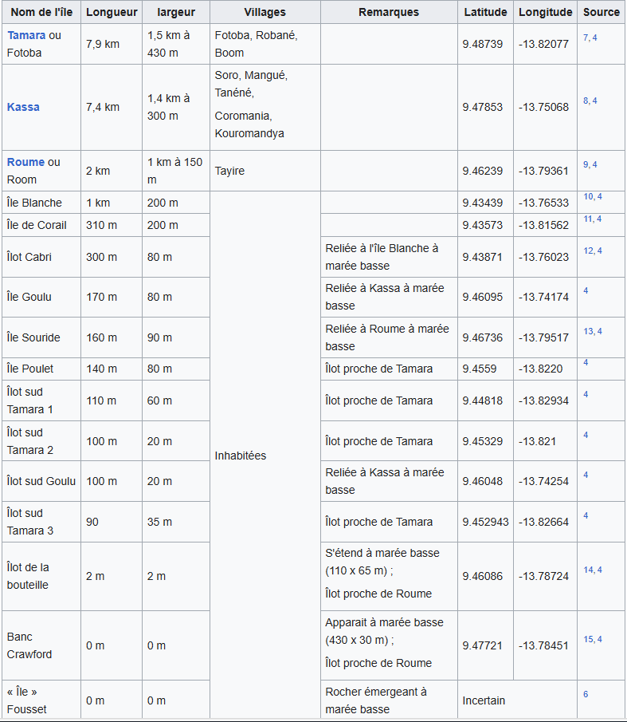

Îlots
Une dizaine d'ilots:
Îlot Cabri relié à marée basse à l'île Blanche ;
quatre îlots au sud de l'île de Tamara dont l'île Poulet ;
à l'Est de l'île de Kassa deux ilots reliés à l'île de Kassa à marée basse dont l'île Goulu ;
Îlot de la Bouteille au sud de l'île de Roume dont seul un rocher de quelques mètres émerge à marée haute ;
Île Souride relié à marée basse à l'île de Roume ;
le banc Crawford : haut fond sableux qui émerge à marée basse au nord de l'île de Roume ;
Île Fousset : Rocher qui émerge à marée basse entre l'île de Roume et Tamara.
Toutes les iles et ilots

Contactez nous!